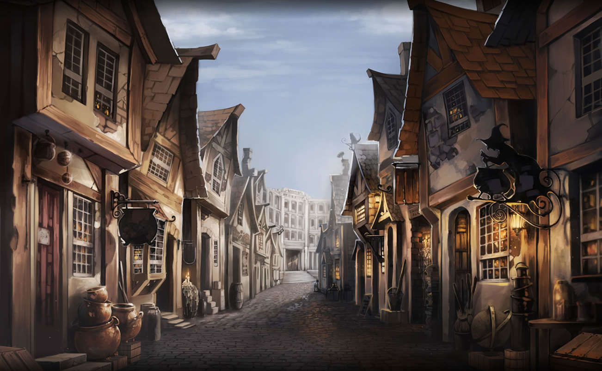

CALLEJÓN DIAGON

El callejón Diagon es uno de los lugares más famosos del mundo mágico, se sitúa en el corazón de Londres y se accede a él a través del Caldero Chorreante. Podría decirse que es el centro neurálgico de la vida social mágica en la capital.
El callejón es famoso por la cantidad y variedad de comercios y establecimientos que lo conforman. Entre los locales más importantes se encuentran los siguientes:
-
CALDERO CHORREANTE
Conocido por su exquisita crema de guisantes, el Caldero Chorreante es el principal acceso al callejón. Este antiguo bar-restaurante es también hostal, de modo que cuenta con algunas habitaciones para acoger a magos y brujas que necesiten un lugar para pasar la noche en la capital. Se le considera el último bar mágico de la capital de Inglaterra. -
FLOURISH & BLOTS
Es la librería mágica más famosa, en ella los jóvenes alumnos de Hogwarts adquieren sus libros para cada curso escolar. También vende libros de cualquier índole del mundo mágico. -
MADAM MALKIN
La señora Malkin es la encargada de vestir a los magos desde tiempos inmemoriales. Sus vistosas túnicas tienen una importante reputación por la calidad de los materiales empleados. -
OLLIVANDER´S
El anciano mago Garrick Ollivander regenta la más famosa tienda de varitas de Inglaterra. El señor Ollivander ha dedicado su vida a la comprensión y estudio de las mismas. En el curso escolar en que tuvo lugar el Torneo de los Tres Magos en Hogwarts, contaron con su ayuda para verificar la calidad y el estado de las varitas de los participantes pues dos de ellas las había vendido él mismo y se le conoce por su conocimiento y sabiduría sobre este mundo. -
EL EMPORIO DE LA LECHUZA
Uno de los animales más cotizados en el mundo mágico son las lechuzas por su capacidad de transportar mensajes u objetos volando grandes distancias sin dejar lugar a perdidas. Son animales increíblemente leales y es por ello que existe una tienda exclusivamente dedicada a la venta de las mismas asi como artilugios para el cuidado de las mismas. Es aquí donde Hagrid compro a Harry Potter su primera lechuza, Hedwig. -
FLOREAN FORTESCUE
Su heladería es conocida por todos los magos y cuenta con un pequeño y acogedor local; aunque sin duda la terraza del negocio es el sitio ideal ideal para disfrutar de un helado mientras se observa el ajetreo del callejón un dia cualquiera.